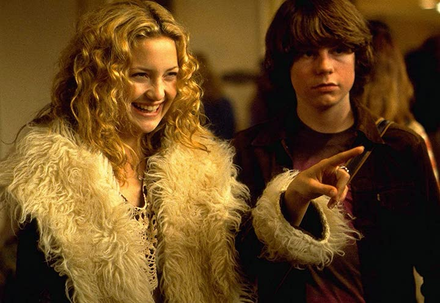
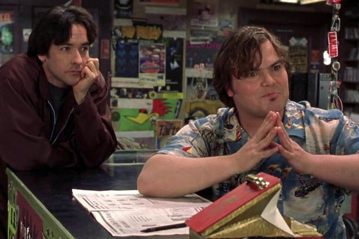

Another genre of movies I love is ones that have a great soundtrack or are based around music. Take a look down below to see some of my favs.
Directed by Cameron Crowe in 2000, this music movie classic stars Kate Hudson, Billy Crudup and Frances McDormand. This movie is about an aspiring writer in San Diego named William (Patrick Fugit) who wants to write for Rolling Stone Magazine. he gets some help from (Pillip Seymore Hoffman) and goes to a concert, whom he ends up following acorss the country on their tour to become a big shot band. they become friends with the groupies and have some very memorable moments along the way.
This movie directed by Stephen Frears in 2000 about a man in a midlife crisis. (John Cusack) works in a record store with (Jack Black) and is having relationship struggles with his current girlfriend. he beings to relfect his past and makes top 5 lists of songs and things throughout his life to find out where he went wrong.
